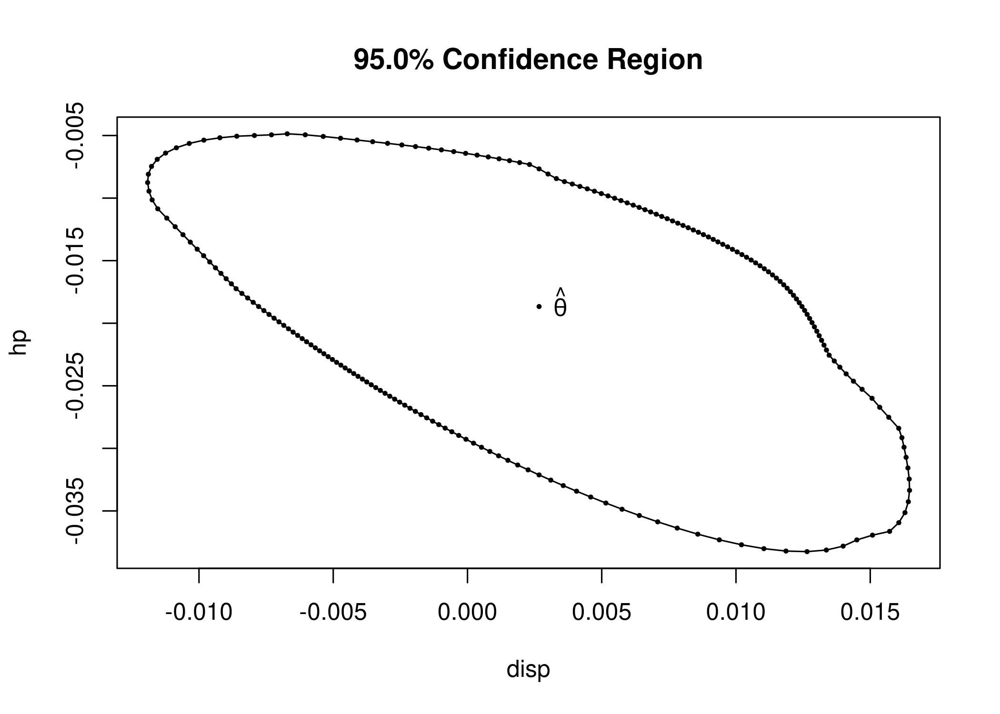

Overview
The R package melt provides a unified framework for data analysis with empirical likelihood methods. A collection of functions are available for regression analysis and hypothesis testing. The core computational routines are implemented with the Eigen C++ library and RcppEigen interface, with OpenMP for parallel computation. Details of the testing procedures are given in Kim, MacEachern, and Peruggia (2021). This work was supported by the U.S. National Science Foundation under Grants No. SES-1921523 and DMS-2015552.
Installation
You can install the latest stable release from CRAN.
install.packages("melt")You can install the latest development version from Github.
# install.packages("devtools")
devtools::install_github("markean/melt")Usage
library(melt)
# Test for the mean
data("precip")
fit <- el_mean(precip, par = 30)
fit
#>
#> Empirical Likelihood
#>
#> Model: mean
#>
#> Maximum EL estimates:
#> [1] 34.89
#>
#> Chisq: 8.285, df: 1, Pr(>Chisq): 0.003998
#>
#> EL evaluation: converged
# Linear regression
data("mtcars")
fit2 <- el_lm(mpg ~ disp + hp + wt + qsec, data = mtcars)
summary(fit2)
#>
#> Call:
#> el_lm(formula = mpg ~ disp + hp + wt + qsec, data = mtcars)
#>
#> Coefficients:
#> Estimate Chisq Pr(>Chisq)
#> (Intercept) 27.329638 443.208 < 2e-16 ***
#> disp 0.002666 0.365 0.54575
#> hp -0.018666 10.730 0.00105 **
#> wt -4.609123 439.232 < 2e-16 ***
#> qsec 0.544160 440.583 < 2e-16 ***
#> ---
#> Signif. codes: 0 '***' 0.001 '**' 0.01 '*' 0.05 '.' 0.1 ' ' 1
#> Chisq: 433.4, df: 4, Pr(>Chisq): < 2.2e-16
#>
#> Constrained EL: converged
cr <- confreg(fit2, parm = c("disp", "hp"), npoints = 200)
plot(cr)
# Analysis of variance
data("clothianidin")
fit3 <- el_lm(clo ~ -1 + trt, data = clothianidin)
summary(fit3)
#>
#> Call:
#> el_lm(formula = clo ~ -1 + trt, data = clothianidin)
#>
#> Coefficients:
#> Estimate Chisq Pr(>Chisq)
#> trtNaked -4.479 411.072 < 2e-16 ***
#> trtFungicide -3.427 59.486 1.23e-14 ***
#> trtLow -2.800 62.955 2.11e-15 ***
#> trtHigh -1.307 4.653 0.031 *
#> ---
#> Signif. codes: 0 '***' 0.001 '**' 0.01 '*' 0.05 '.' 0.1 ' ' 1
#> Chisq: 894.4, df: 4, Pr(>Chisq): < 2.2e-16
#>
#> EL evaluation: not converged
confint(fit3)
#> lower upper
#> trtNaked -5.002118 -3.9198229
#> trtFungicide -4.109816 -2.6069870
#> trtLow -3.681837 -1.9031795
#> trtHigh -2.499165 -0.1157222
# Test of no treatment effect
lhs <- matrix(c(1, -1, 0, 0,
0, 1, -1, 0,
0, 0, 1, -1), byrow = TRUE, nrow = 3)
elt(fit3, lhs = lhs)
#>
#> Empirical Likelihood Test
#>
#> Significance level: 0.05, Calibration: Chi-square
#>
#> Statistic: 26.59804, Critical value: 7.814728
#>
#> p-value: 7.147731e-06